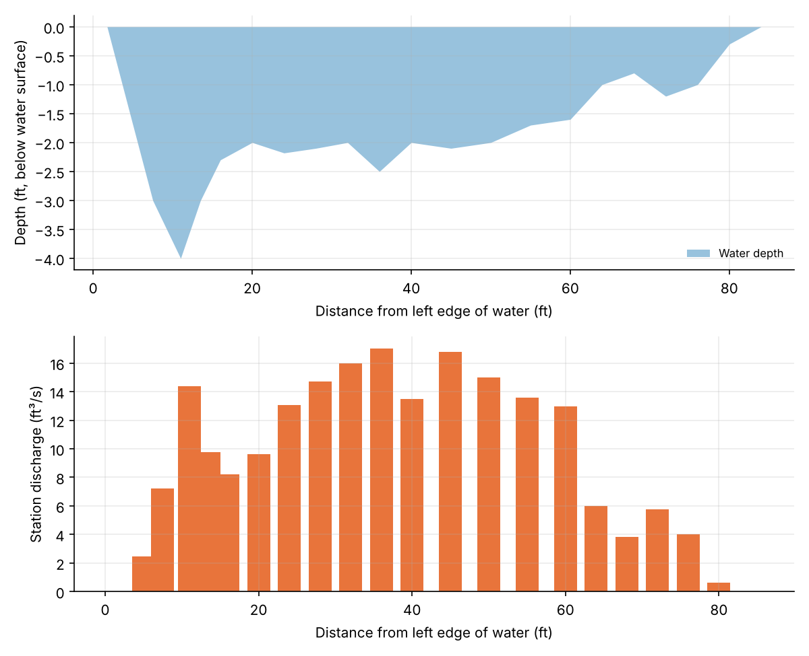
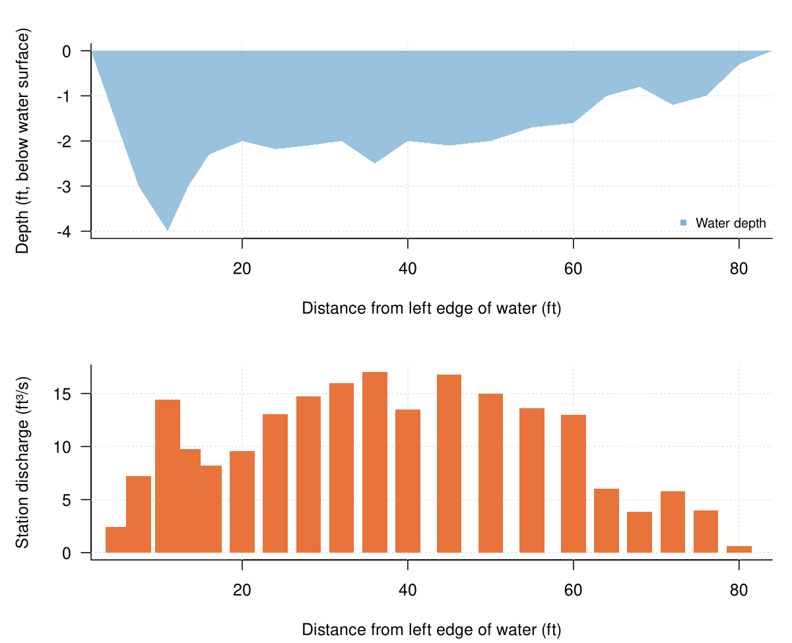
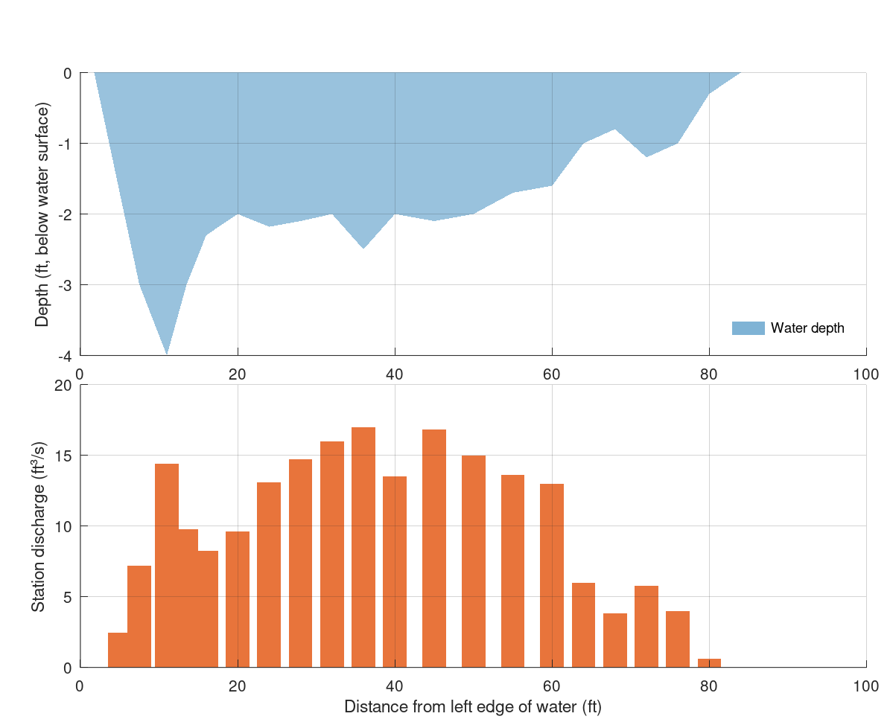

Chapter 4 · Streamflow, Runoff Generation, and Overland Flow
Velocity–area (mid-section) discharge measurement
Channel cross-section and discharge contributed by each measurement station.
Source: Chapter 4 draft; data supplied by the chapter author (figs/fig7_midsection.csv)
Data: fig7_midsection.csv

Code: midsection_gauging.py · image: figure_python.png

"""Velocity–area (mid-section) discharge measurement
Chapter 4 draft; data supplied by the chapter author (figs/fig7_midsection.csv)
Run: python3 midsection_gauging.py -> figure_python.png"""
import numpy as np
import pandas as pd
import matplotlib
matplotlib.use("Agg")
import matplotlib.pyplot as plt
a = pd.read_csv("fig7_midsection.csv")
a["negd"] = -a["depth_ft"]
fig, axes = plt.subplots(2, 1, figsize=(8, 6.5), squeeze=False, gridspec_kw={"height_ratios": [1, 1]})
axes = axes[:, 0]
ax = axes[0]
ax.fill_between(a["distance_ft"], 0, a["negd"], color="#7fb3d5", alpha=0.8, lw=0, label="Water depth")
ax.set_xlabel("Distance from left edge of water (ft)")
ax.set_ylabel("Depth (ft, below water surface)")
ax.legend(frameon=False, loc="lower right", fontsize=8)
ax.grid(alpha=0.25)
for s in ("top", "right"): ax.spines[s].set_visible(False)
ax = axes[1]
ax.bar(a["distance_ft"], a["discharge_ft3_per_s"], width=3.0, color="#e8743b", edgecolor="none")
ax.set_xlabel("Distance from left edge of water (ft)")
ax.set_ylabel("Station discharge (ft³/s)")
ax.grid(alpha=0.25)
for s in ("top", "right"): ax.spines[s].set_visible(False)
fig.tight_layout()
fig.savefig("figure_python.png", dpi=150)

Code: midsection_gauging.R · image: figure_r.png

# Velocity–area (mid-section) discharge measurement
# Chapter 4 draft; data supplied by the chapter author (figs/fig7_midsection.csv)
# Run: Rscript midsection_gauging.R -> figure_r.png (base R, no packages needed)
a <- read.csv("fig7_midsection.csv", stringsAsFactors = FALSE)
a$negd <- -a$depth_ft
png("figure_r.png", width = 1200, height = 975, res = 150)
par(mfrow = c(2, 1), mar = c(4.2, 4.6, 2.2, 1), las = 1)
layout(matrix(1:2, ncol = 1), heights = c(1,1))
par(mar = c(4.2, 4.6, 2.2, 1), las = 1)
plot(NA, xlim = range(c(a$distance_ft), na.rm = TRUE), ylim = range(c(a$negd, 0), na.rm = TRUE), log = "", xlab = "Distance from left edge of water (ft)", ylab = "Depth (ft, below water surface)", bty = "l", xaxs = "i")
grid(col = "grey88")
polygon(c(a$distance_ft, rev(a$distance_ft)), c(a$negd, rev(rep(0, length(a$distance_ft)))), col = adjustcolor("#7fb3d5", alpha.f = 0.8), border = NA)
legend("bottomright", legend = c("Water depth"), col = c("#7fb3d5"), lty = c(0), pch = c(15), bty = "n", cex = 0.8)
plot(NA, xlim = range(c(a$distance_ft), na.rm = TRUE), ylim = range(c(a$discharge_ft3_per_s, 0), na.rm = TRUE), log = "", xlab = "Distance from left edge of water (ft)", ylab = "Station discharge (ft³/s)", bty = "l", xaxs = "i")
grid(col = "grey88")
rect(a$distance_ft - 3.0/2, 0, a$distance_ft + 3.0/2, a$discharge_ft3_per_s, col = "#e8743b", border = NA)
invisible(dev.off())

Code: midsection_gauging.m · image: figure_matlab.png

% Velocity–area (mid-section) discharge measurement
% Chapter 4 draft; data supplied by the chapter author (figs/fig7_midsection.csv)
% Run: run midsection_gauging.m -> figure_matlab.png (works in MATLAB and GNU Octave)
clear; close all;
fid = fopen('fig7_midsection.csv'); fgetl(fid);
C = textscan(fid, '%s%f%f%f%f%f%f%f%s', 'Delimiter', ',', 'EmptyValue', NaN); fclose(fid);
a.station = C{1};
a.distance_ft = C{2};
a.depth_ft = C{3};
a.mean_velocity_ft_per_s = C{4};
a.width_ft = C{5};
a.area_ft2 = C{6};
a.discharge_ft3_per_s = C{7};
a.percent_of_Q = C{8};
a.velocity_method = C{9};
a.station = strrep(a.station, '"', '');
a.velocity_method = strrep(a.velocity_method, '"', '');
a.negd = -a.depth_ft;
figure('Visible', 'off', 'Position', [100 100 800 650], 'Color', 'w');
axes('Position', [0.09 0.510 0.88 0.390]); hold on;
xx = a.distance_ft(:)'; hi_ = a.negd(:)'; lo_ = zeros(size(a.distance_ft))(:)'; ok = ~isnan(hi_); h0 = patch('XData', [xx(ok) fliplr(xx(ok))]', 'YData', [hi_(ok) fliplr(lo_(ok))]', 'FaceColor', [0.498, 0.702, 0.835], 'EdgeColor', 'none', 'FaceAlpha', 0.8);
xlabel('Distance from left edge of water (ft)');
ylabel('Depth (ft, below water surface)');
box off; grid on; set(gca, 'GridAlpha', 0.2, 'Layer', 'top');
legend([h0], {'Water depth'}, 'Location', 'southeast'); legend boxoff;
axes('Position', [0.09 0.080 0.88 0.390]); hold on;
xb = a.distance_ft(:); yb = a.discharge_ft3_per_s(:); h0 = patch('XData', [xb-3.0/2 xb+3.0/2 xb+3.0/2 xb-3.0/2]', 'YData', [zeros(size(yb)) zeros(size(yb)) yb yb]', 'FaceColor', [0.91, 0.455, 0.231], 'EdgeColor', 'none');
xlabel('Distance from left edge of water (ft)');
ylabel('Station discharge (ft³/s)');
box off; grid on; set(gca, 'GridAlpha', 0.2, 'Layer', 'top');
print('-dpng', '-r150', 'figure_matlab.png');